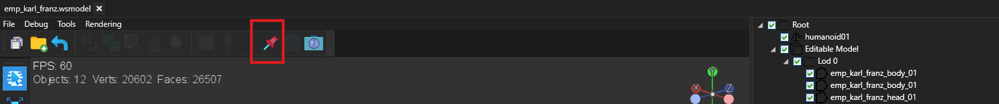
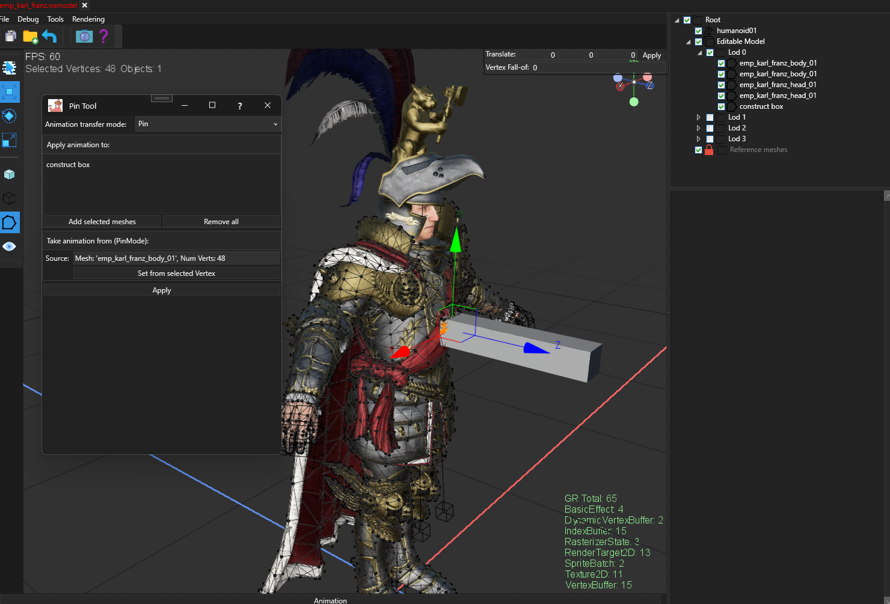
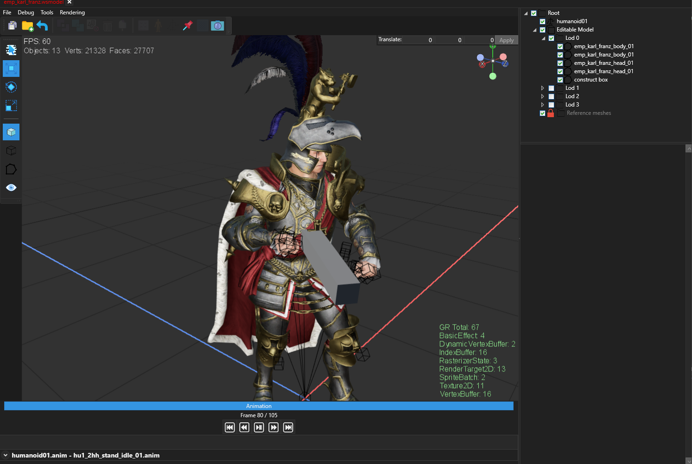
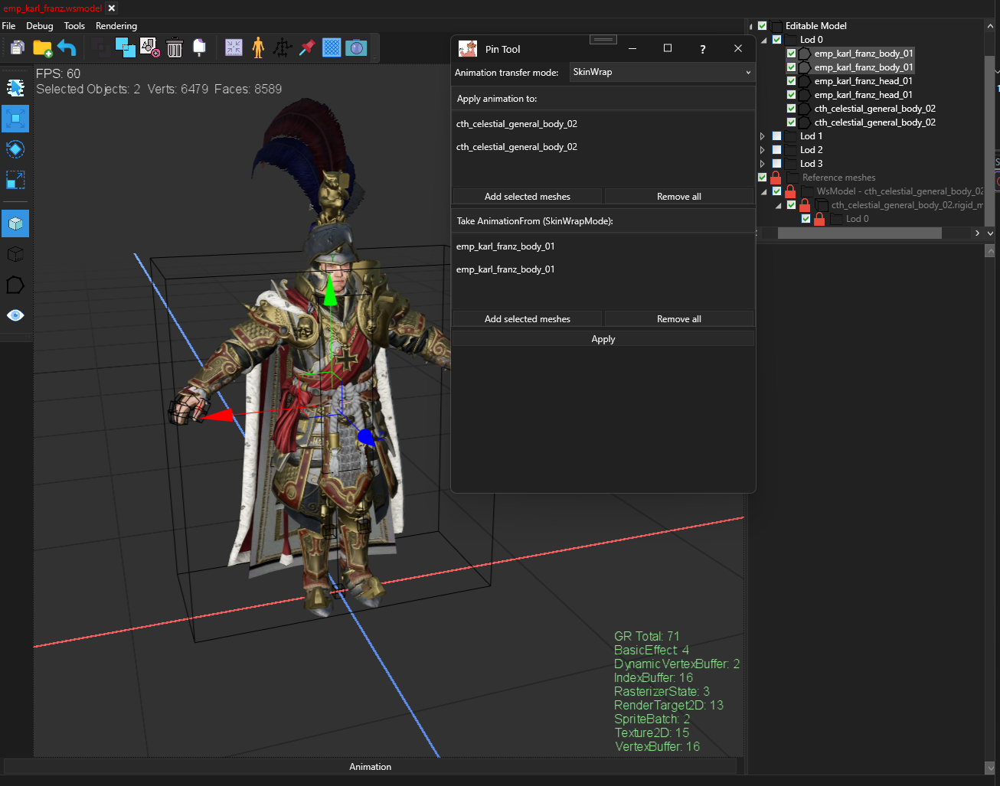
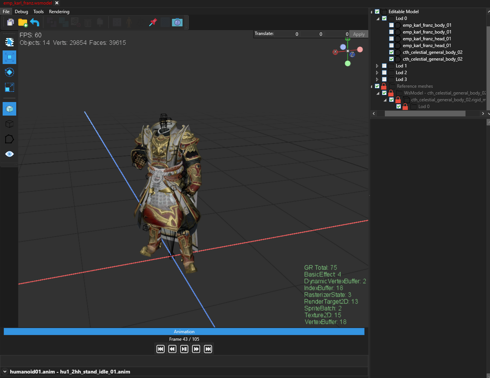

Pin Tool
The Pin Tool makes meshes move with an animated skeleton.
When you import a new piece of armor, a weapon, or any other 3D object into the Kitbash Editor,
that object does not know how to follow the character's animations yet.
The Pin Tool copies the animation information from an already-working mesh onto your new one.

Key concepts
In Total War games, every model that moves with an animation is connected to a skeleton — an invisible set of bones
(like arm_left, spine, head, and so on). Each point on the mesh surface is told which bone(s) it should follow and
by how much. This information is often called rigging or bone weights.
Without correct rigging, your mesh will either stay frozen in place, or fly off in wrong directions when the character animates.
The Pin Tool gives you two ways to fix this:
-
Pin — makes the entire mesh follow a single point on the skeleton.
The mesh moves as one solid piece, like a weapon held in a hand or a shield strapped to an arm.
Nothing on the mesh bends or stretches.
-
Skin Wrap — copies animation data from a nearby mesh that already animates correctly.
Each point on your new mesh looks at the closest spot on the source mesh and copies the animation information from there.
This means your mesh will bend, stretch, and move naturally — great for things like clothing, cloaks, or body parts.
Quick rule of thumb: If the object should stay rigid (a sword, a helmet ornament, a belt buckle), use Pin.
If the object should bend and deform with the body (a shirt, a cape, flexible armor plates, skin), use Skin Wrap.
When to use this tool
- You imported a new mesh and it does not animate at all.
- You want to attach an accessory (weapon, shield, ornament) to a specific spot on a character.
- You have clothing or armor that should deform the same way as the body underneath it.
- You want to quickly copy animation data from one mesh to another without doing it by hand.
Examples
- Pin: Attach a sword to a hand — the sword should move with the hand bone and never bend.
- Pin: Fix a decorative plate to the chest — the plate follows the torso as a solid piece.
- Skin Wrap: A new chain mail shirt placed over an existing body — the shirt bends at the waist, shoulders, and elbows just like the body does.
- Skin Wrap: Replacement legs or arms after kitbashing — the new parts need to animate the same way the originals did.
Before you start
-
Your new mesh (the one that needs animation) should already be positioned correctly on top of or near
the character. Skin Wrap copies data based on how close the meshes are in 3D space, so they need to line up.
-
The tool will warn you if any mesh has a pivot point that is not at zero.
If you see this warning, the results will be wrong. Fix the pivot point first.
-
For Skin Wrap, the source mesh (the one you are copying from) must already animate correctly
and should cover the same area as the target. If your new armor covers the chest, the source mesh needs to have
a chest area too.
-
For Pin, you will need to pick a specific point (vertex) on the source mesh.
A good choice is a point that sits right on the bone you want the object to follow.
How to use — Pin mode
Use this when the object should stay rigid and follow one spot on the skeleton.


- Open the Pin Tool.
- Make sure the mode is set to Pin.
- In the 3D view, click on the mesh(es) you want to give animation to.
- Press Add selected meshes to add them to the "Apply animation to" list.
- Switch to vertex selection mode in the 3D view (this lets you click on individual points instead of whole meshes).
- Click on a point on the mesh that already animates correctly — pick a point at the spot where you want your object to attach.
- Press Set from selected Vertex.
- Press Apply.
After applying, every point on your target mesh will follow the same bone as the vertex you picked.
The mesh will move as one solid piece.
Tip: Try to pick a vertex that follows only one bone.
Points near joints (like elbows or knees) often follow two bones at once, which can make a "pinned" object wobble slightly.
Pick a point further from any joint for the cleanest result.
How to use — Skin Wrap mode
Use this when the object should bend and move like the body underneath it.

- Open the Pin Tool.
- Set the mode to Skin Wrap.
- In the 3D view, select the mesh(es) that need animation.
- Press Add selected meshes to add them to the "Apply animation to" list.
- Now select the mesh(es) that already animate correctly — these are the ones you want to copy from.
- Press Add selected meshes in the source area.
- Press Apply.


The tool goes through every point on your target mesh, finds the closest spot on the source mesh surface,
and copies the animation data from there. This means areas near the arm will follow the arm, areas near the
torso will follow the torso, and so on — all done automatically.
Multiple sources: You can add more than one source mesh.
This is useful when the body is split into separate pieces (torso, arms, legs, head).
The tool will look across all of them and copy from whichever is closest for each point.
Controls reference
| Control |
What it does |
| Animation transfer mode |
Switches between Pin and Skin Wrap. |
| Apply animation to — Add selected meshes |
Adds the meshes you have selected in the 3D view to the list of meshes that will receive animation. |
| Apply animation to — Remove all |
Clears the list. |
| Set from selected Vertex (Pin mode) |
Saves the vertex you have selected in the 3D view as the animation source. |
| Add selected meshes (Skin Wrap source) |
Adds meshes to copy animation from. |
| Remove all (Skin Wrap source) |
Clears the source mesh list. |
| Apply |
Runs the tool and closes the window. The result can be undone with Ctrl+Z. |
Things to watch out for
-
Pivot point warning. If the tool tells you a mesh has a pivot point, the result will be wrong.
You need to reset the pivot point to zero before using the tool.
-
Same mesh in both lists. You cannot put the same mesh in both the target and the source.
The tool will stop and show an error if you try.
-
Meshes must overlap (Skin Wrap).
Skin Wrap works by finding the nearest surface. If your new mesh is far away from the source, the closest surface
might be a completely wrong body part, and the animation will look broken. Make sure the meshes line up first.
-
Undo works. If the result looks wrong, just press Ctrl+Z to undo and try again with different settings.
Important: Skin Wrap works best when your new mesh sits right on top of the source mesh.
If they are far apart or in very different poses, the results will be poor.
Position and align your meshes before running the tool.
Pin vs Skin Wrap — quick comparison
| Pin |
Skin Wrap |
| Object stays rigid — no bending |
Object bends and deforms with the body |
| Good for: weapons, shields, buckles, ornaments |
Good for: clothing, capes, skin, flexible armor |
| You pick one point to attach to |
Every point is matched automatically |
| Very fast — one click |
Takes a moment to process, but fully automatic |
When results are not good enough
The Pin Tool is a quick automated solution. It may not produce perfect results in every situation:
- Parts of your mesh that stick out far from the source (like a long flowing cape trailing behind) may get wrong animation data because the nearest surface is not the right body part.
- If the source mesh has very few triangles in the area you care about, the transferred animation may look rough or imprecise.
- If the source and target are in very different positions or poses, the automatic matching will not work well.
- Some cases need hand-tuned animation data that an automatic tool cannot replicate. For those, consider doing a proper re-rig in a 3D modelling application.